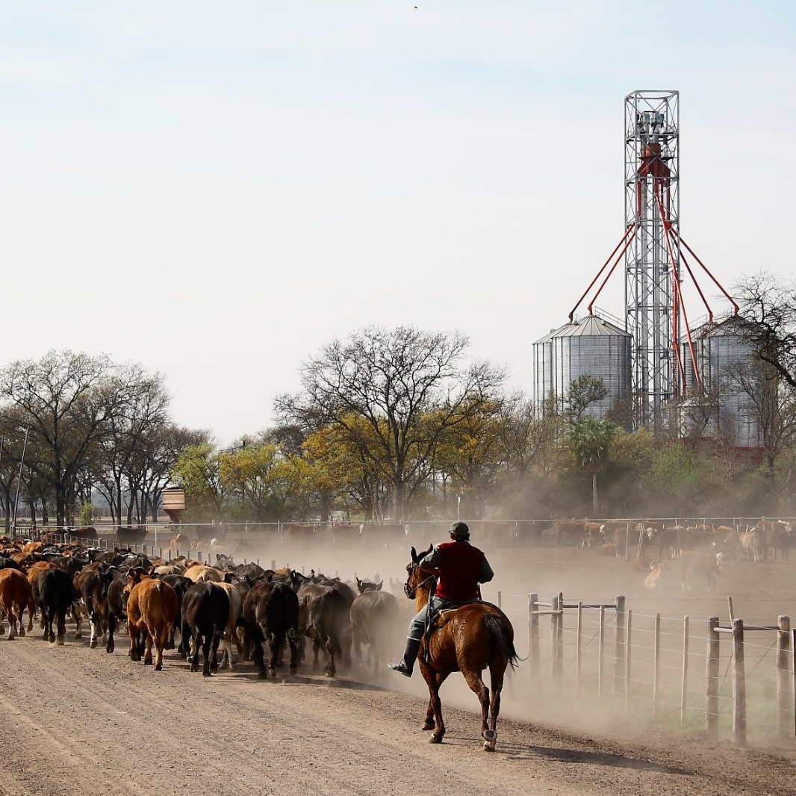

El establecimiento cuenta con instalaciones diseñadas para que el animal se sienta en las mejores condiciones de confort. Para la identificación del ganado,
además del sistema oficial (caravanas) se utilizan chips electrónicos que permiten monitorear la performance de cada animal desde su ingreso hasta el momento de faena en el frigorífico;
asegurando así un seguimiento individual y preciso de cada novillo. El manejo y monitoreo del ganado está a cargo de personal especialmente capacitado en bienestar animal.
Visite nuestro SCADA de
FEEDLOT
